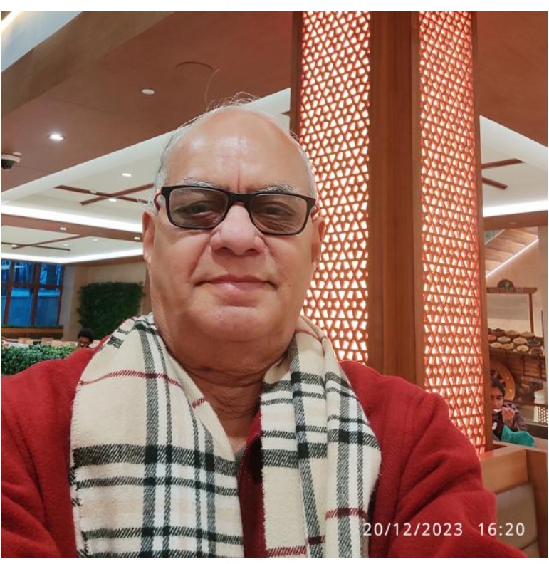

ICMT Founders & Distinguished Academic Pillars
The Indian Commerce and Management Teachers (ICMT) platform was founded by eminent academicians and former Vice Chancellors to create a collaborative bridge for scholarship, research mentoring, and educational innovation.



Loyola Institute of Business Administration, Chennai
Research Guideship & Doctoral Mentorship
Faculty members in the ICMT network actively serve as recognized research supervisors for Ph.D. and M.Phil. scholars across prominent Central, State, and Deemed Universities.
Commerce & Banking
Doctoral guidance in Financial Management, Accounting Standards, Corporate Taxation, and Fintech Systems.
Management & Strategy
Research supervision in Strategic HR, Marketing Analytics, Organizational Behavior, and Supply Chain Networks.
Technology & Economics
Interdisciplinary research in Business Analytics, Applied Econometrics, AI in Commerce, and Development Economics.